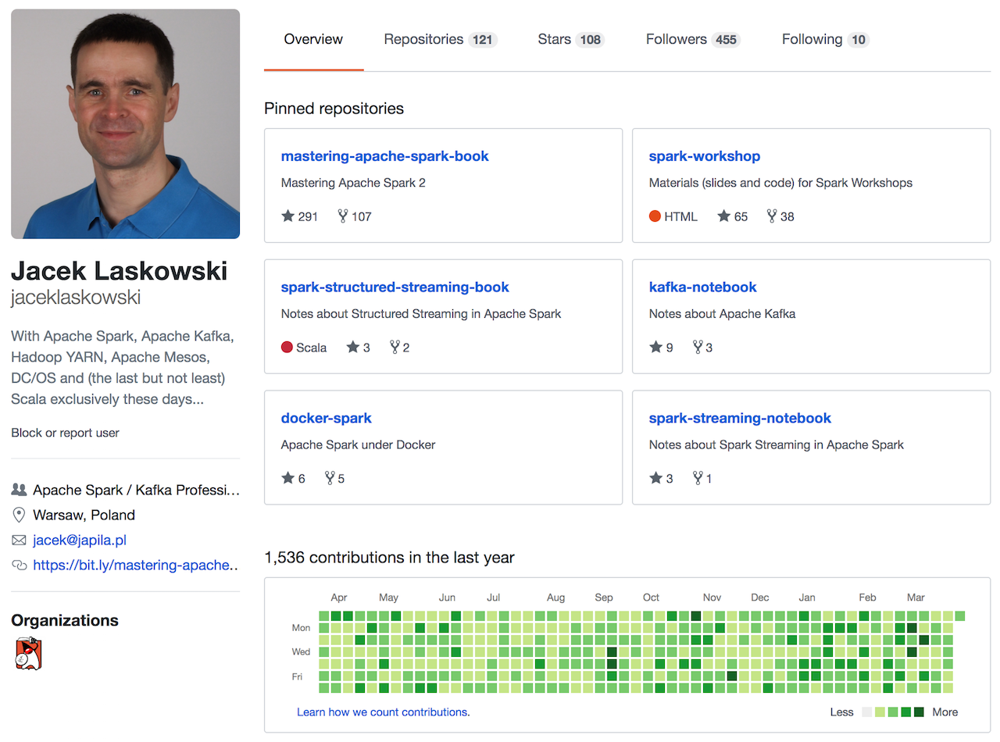
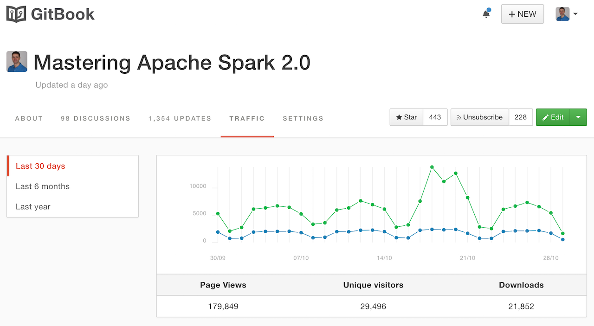
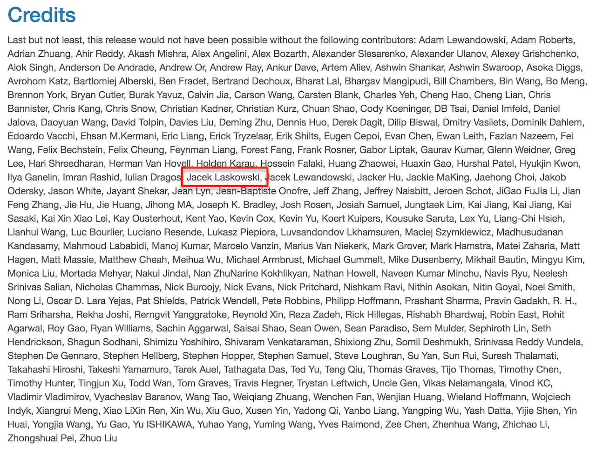
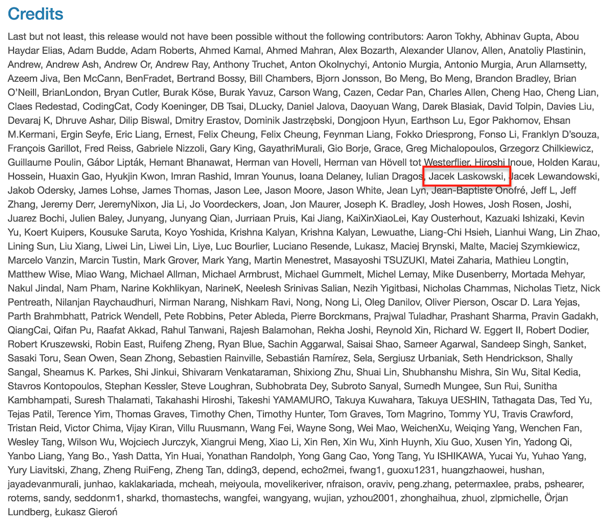
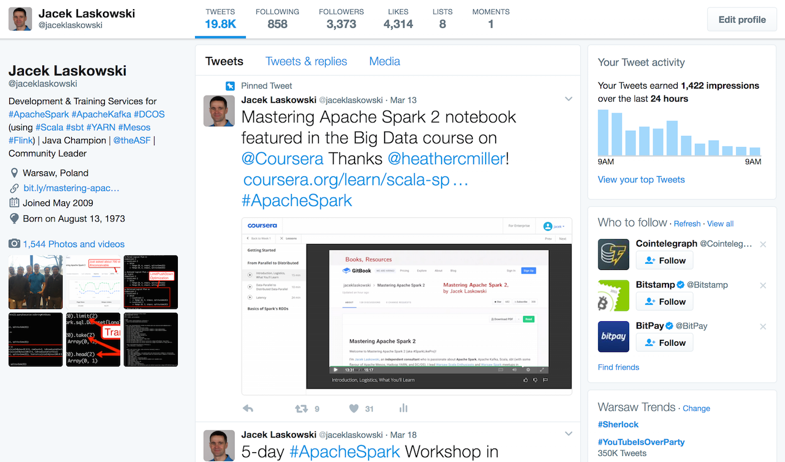

Apache Spark 2.0 Workshop 2 Days / Ljubljana
@jaceklaskowski / StackOverflow / GitHub / Mastering Apache Spark 2.0
- Jacek Laskowski is an independent consultant
- Among contributors to Apache Spark 2.0 (since 1.6.0)
- Contact me at jacek@japila.pl or follow on twitter @JacekLaskowski (and learn more Spark!)
- Delivering Development Services | Consulting | Training
- Leader of Warsaw Scala Enthusiasts and Warsaw Apache Spark
- Java Champion
https://github.com/jaceklaskowski

http://bit.ly/mastering-apache-spark

Among contributors to Apache Spark 1.6

Among contributors to Apache Spark 2.0

http://stackoverflow.com/users/1305344/jacek-laskowski

https://twitter.com/jaceklaskowski

Agenda - Day 1
-
WARM-UP: Developing Command-Line Spark Application
- Using IntelliJ IDEA, Scala, sbt and spark-submit
- SparkSession, Dataset and Encoders
- Aggregations, Join and Window Operators
- Catalyst Query Optimizer
Agenda - Day 2
- Spark MLlib's ML Pipelines
- Structured Streaming (and Apache Kafka)
- Monitoring Using SparkListeners
- Spark Streaming's Stateful Operators (e.g. mapWithState)
- Kafka Integration using Direct API
- Spark Thrift Server - Spark's JDBC & ODBC Interface
Prerequisities
- Some programming experience using modern programming language (preferably on JVM)
- Java, Python, Scala, C#
- Installed
- Downloaded
- Willingness to ask PLENTY of questions
Questions?
- Read Mastering Apache Spark 2.0
- https://bit.ly/mastering-apache-spark
- Follow @jaceklaskowski on twitter
- Upvote my activities on StackOverflow
- Use Jacek's code at GitHub
- Read Jacek Laskowski @ Medium
- Visit Jacek Laskowski's blog